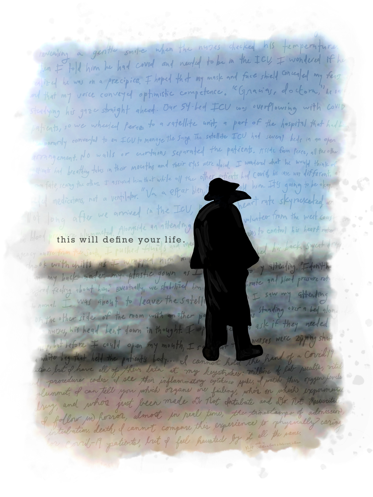

This article is dedicated to the healthcare workers who risked their lives to care for patients with COVID-19. It was originally published on October 3, 2020 and has been republished by Kevin MD, The Pursuit, The Monroe Evening News, and Significance.
{kind=link}

December 15, 2018. My coworker is moving to California. She’s a statistician for a group of pulmonary and critical care physicians at our New York City hospital, and I’m a statistician who’s trying not to do too many things wrong, only three months into my first job out of school. “I think you’d be good with this research team,” she tells me. “There’s some really interesting studies on lung diseases.” I nod, because that’s what you do when you’ve been at your job for three months.
I take over her projects and start learning organ failure scoring systems, criteria for acute respiratory distress syndrome, and the differences between invasive and non-invasive mechanical ventilation. My close friend does cutting-edge cancer statistics, and I feel a bit resentful. Nobody ever wants to hear about the controversial definitions of sepsis at family parties.
As the months pass by, I slowly build my mental encyclopedia and begin to embrace my role as a pulmonary and critical care biostatistician.
March 5th, 2020. A full year and three months later, I wake up very sick. It is the kind of sick where you can’t do anything but curl up on your bathroom floor and let being sick consume you. Too sick to read, too sick to sleep. I spike a fever and can hardly move for two days before I hobble to the doctor’s office and nearly faint mid-exam. The doctor insists I stay until I drink an entire bottle of water. “Is there anyone to check on you at home?” he asks, concerned. No, no, I’ll be fine.
By the end of the week my fever breaks and I’m back to work. It’s early March, so “Coronavirus?!” is everyone’s first question. They’re all joking, except the pulmonologists I work with. Nothing respiratory, I assure them. One isn’t convinced. “Some young people are getting ‘silent hypoxia.’ It is possible to have COVID-19 with no respiratory symptoms at all,” she tells me. Months later, I’ll read that as the headline of various news articles, but the time, no testing is available to me.
March 17, 2020. Barely two weeks pass before the number of confirmed COVID-19 cases explode in New York City. Restaurants are instructed to close the day before Saint Patrick’s Day, my birthday. I can’t meet up with my friends anymore, so I cook macaroni and cheese and run to Central Park to watch the sun set behind skyscrapers. My grandparents call me and they make Happy Birthday sound like a hymn from a Catholic mass and I laugh, and it is the only part of my day that feels like every other birthday.
While I’m leaving the park, my mom texts me that she hopes I had a good day. Any other year it would be strange for her to nearly miss my birthday, but this year she is working long hours. She’s a nursing director back in Michigan and her hospital is already preparing for their own impending COVID-19 outbreak. The preparations will not be in vain.
As I jog home, I pass a sign asking former healthcare workers to volunteer to take care of NYC COVID-19 patients. Before I began my career in biostatistics, I worked at a hospital caring for acutely ill patients, so I sign up without hesitation. My misguided logic is that the exploding numbers of COVID-19 cases will make my critical care collaborators too busy to pursue their research, and this seems like the best way for me to help as the world descends into chaos. While I fill out the online contact form, I wonder what it will feel like to take care of patients again. I look up YouTube videos to refresh myself on drawing blood and inserting IVs.
How absolutely crazy that I thought my biostatistics training wouldn’t be useful, in retrospect.
March 22, 2020. I’m a pulmonary and critical care team’s statistician so naturally I am one of the first analysts at my hospital pulled into COVID-19 work. It starts with a text on a Sunday – the first of many – from a pulmonologist. “Do we have a data dictionary for our ICU database, Kat?” Our informatics team is using the structure of the ICU database I work with as part of a COVID-19 tracking repository for our entire hospital. Within days, I am told to drop all of my other research projects for COVID-19 work.
The first request for me is straightforward: summarize the laboratory results from our first 300 COVID-19 patients. 300 patients at our hospital! That’s insane, I think to myself. It seems only a week ago the news reports said there were 300 people in the entire city with COVID-19. I begin working through issues linking the databases, identifying missing information, and explaining critical care jargon to other analysts. Each morning I pull new data and watch the files grow exponentially larger.
There are countless questions flooding in from all over the hospital. Most of them revolve around “who will get intubated, and when?” My hospital, like so many other hospitals in NYC, is on track to run out of ventilators soon. My attendance becomes mandatory at multiple “risk prediction” meetings each week. I find myself in charge of extensive data cleaning and then writing code for models to answer vague and terrifying questions: we need to figure out which patients will “crash,” who can be transferred, and, if we run out of ventilators, who has the best chance to survive.
I am a junior researcher, previously unconcerned with hospital operations, suddenly confronted with the task of providing rapid answers for potentially immediate decision making. I accept my new role with the utmost seriousness. My days, normally spent coding with double monitors at a proper desk, suddenly fill with Zoom meetings from 8:30-5:00 from a laptop at my kitchen table. Each night after the meetings end, I take advantage of the relative quiet to code into the early hours of the morning.
For several weeks I use the long, uninterrupted hours of weekends to work, waking up with the sun and continuing on until at least 11pm, with few breaks in between. On some nights I send my mom “good morning” texts at 5am. “Are you waking up early or have you not slept yet?” is always her first question. The next is, “No fever? No cough?” She is worried about me, living in the international epicenter, but I’m just as worried about her, working at a hospital every day. She informs me that my dad is sleeping in my old bedroom in case she brings the virus home.
Hospitals around the city begin to call me, wanting to know if I can still help care for COVID-19 patients as a former healthcare worker. “I want to but I can’t, I’m so sorry, I’m helping with COVID data now.” It sounds and feels inconsequential.
April 4, 2020. My best friend and her sister are also nurses in Michigan. I FaceTime her to check in. She and her sister’s units have become “hot floors”: every room is filled with a COVID-19 patient. They were living with their parents, another sister, uncle, and cousins, but both have moved to an AirBnb for the foreseeable future. “It’s so crazy here, Kitty,” she tells me in a defeated voice. At the time, Michigan’s case trajectory is second only to New York’s.
One of her nursing friends has been hospitalized with COVID-19 and is on 6 Liters of oxygen. I can’t help but think about the prediction models I’ve been working on. I mentally run his characteristics through them. I know what my models would estimate his probability of intubation to be.
I listen to her talk about the N-95 masks they’ve been given. “Remember how they used to say those were one-time use?” she asks me. I do. “They started telling us they were good for the whole day, and then they said they’d be good for the whole week, and now they’re saying we might have to start sharing.” I wonder what data analyst, perhaps just like me, is crunching those numbers and feeding the information to hospital administration. “The virus is so terrible. I’ve never done so much post-mortem care, zipped so many body bags…” Her voice drifts off.
I feel guilty, on the sidelines. I see the raccoon eyes – the only part of their faces visible between hair caps and procedure masks – of the physicians I spend all day hopping on and off meetings with, and I desperately want to help. I cannot hold the hand of a COVID-19 patient but I have all their data at my keystrokes: millions of lab results, vital signs, and procedure codes. I see their inflammatory cytokines spike, I watch their oxygen levels plummet, I can tell you which organs are failing, who’s on which experimental drug, and who’s just been made Do Not Intubate and Do Not Resuscitate. I follow in horror, almost in real-time, the time-stamps of admission, intubation, death. I cannot compare this experience to physically caring for COVID-19 patients, but I feel haunted by it all the same.
I hole up in my tiny studio in Manhattan for days at a time, listening to the wails of ambulances and pings of messages from my computer. I see only one friend with any frequency; we both live alone, 18 blocks from each other. She texts me often, asking to meet in Central Park. She suspects I am not doing well, and she is right. I walk with her all over the Upper East Side a few times a week, each of us donned in our black cotton masks. We try not to talk about COVID-19, but it’s hard to avoid when our walks take us past the pop-up ICU tents and refrigerated trucks that stretch entire blocks – the overflow morgues for NYC’s dead.
We try to time our walks so that we’re outside at 7pm, when the city unites to cheer for healthcare workers. If I’m not out walking with her, I climb religiously onto my fire escape every night to clap. Sometimes a man in the apartment across the street sings Sinatra. I want to wake up in the city that never sleeps… New York, New York! I’ve only lived here two years, but I miss “the city that never sleeps” so badly that it hurts.
Life continues in this way for me, with no real sense of time or distinguishing events, from mid March until early May.
May 10, 2020. It is Mother’s Day, and my 50th straight day of working with COVID-19 data. At 11pm, my cell phone goes off. It is an ominous vibration against my kitchen table, where I am perpetually sitting with my laptop whirring. “Hi Honey… I just wanted to let you know that, mmm…” it’s my mom, and her voice is cracking. I finish the sentence for her, “Aunt Peggy died?” I ask, sadly. “Yes.” “Okay. Thanks for letting me know.” I stare into the white brick wall in front of my kitchen table for so long that I start seeing multicolored spots.
My grandfather’s eldest sister, my Aunt Peggy, had begun showing telltale symptoms of COVID-19 and tested positive only a few days previously. She’d been without any visitors in her assisted living home for months due to isolation restrictions. She was royalty in our family; the red-lipsticked, always fashionably late, prized guest at every family party. She had an unforgettable, incredibly sweet voice, and I can still hear her words to me last Christmas. “How’s New York, Katherine? I’m so proud of you.” She was the first nurse in my family, and she influenced my mom to become a nurse, who influenced me to pursue medical research. The matriarch of our family left us on Mother’s Day.
I spend the night trying to find a rental car company that will allow me to drive one-way from New York to Michigan. It can’t be done; I am several weeks too late in my exodus from the city. I book a flight instead and leave a few days later on a near-empty plane to spend time with my family. I plan to stay in Michigan for two weeks, but I don’t leave for two months.
September 20, 2020. The leaves I watched bud in Central Park during my walks this spring are changing to red and gold. As I write this, I think of countless other ways I could attempt to explain what my tiny corner of the world was like during NYC’s outbreak. Most are too personal to ever record. At the same time, it is difficult to share even the memories I have, partially because I know they are incomparable to the frontline workers’ who risked their lives everyday.
My experiences living and working in Manhattan during March, April, and May will stick with me forever. I hope there comes a day that I can meet in real life – mask free – all the analysts, hospital administrators, physicians, residents, fellows, medical students, and data engineers I conversed with so frequently during the height of the outbreak. At the same time, I hope we never have to work together again. It is a wish that I fear will not come true.
Just this past week I attended a meeting with our Informatics team. “It’s good to ‘see’ everyone,” someone said. It’s only half true; the circumstances that bring us to meetings together are never good. We discussed data structures for a possible second wave of COVID-19 in NYC as schools and indoor dining reopen. After the call, I felt an immense sadness, despite being in a much better place than when I left the city in May.
At the bottom of my heart, I don’t know if I can handle another round of it all. Can you?